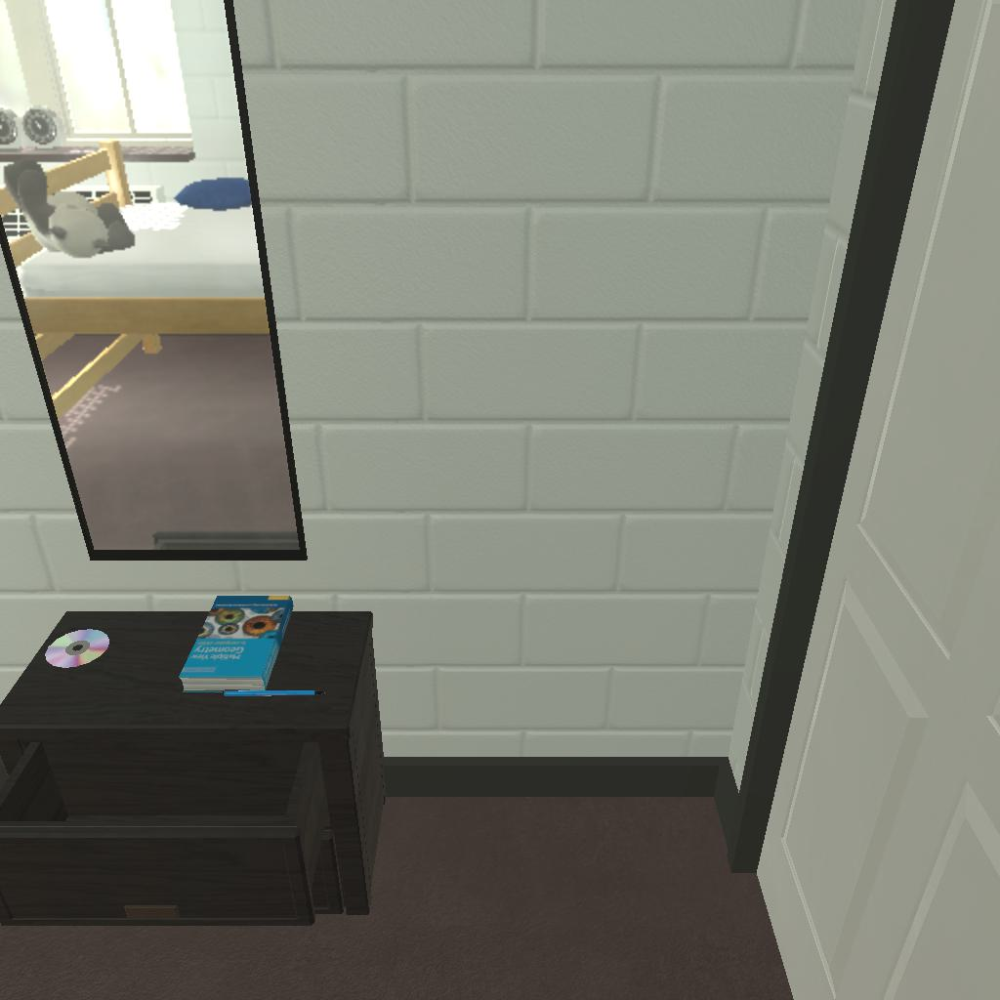

---------------------------------------------------------task: 8---------------------------------------------------------
--------------------------------------------------------------------------------------------------------------------------------------------------------------------
--------------------------------------------------------------------------------------------------------------------------------------------------------------------
Step:--------------------------------------------------------------------------15-------------------------------------------------------------------------------
----------------------------------------
VLM Prompt:
Image1:
**Instruction**
1. Analyze the provided image to identify all visible household objects, focusing on those relevant to the task description "put a laptop in desk."
2. Use the analysis of the image and the task hint "The agent must find an object of the desired type, pick it up, find the correct location to place it, and put it down there." to answer the question: what is the most reasonable action in the choices for the task description "put a laptop in desk"?
4. Decide and write the answer using the template: The answer is: (i): , where i is the real number. If there is no desired object in the image, search every place based on **Initial Observation** to find the object. And if no one is exactly correct, choose a similar answer.
**Initial Observation**
You are in the middle of a room. Looking quickly around you, you can see bed (1), garbagecan (1), desk (1), sidetable (1), drawer (1-5), laundryhamper (1)
**Answer Choices**
(1): go to bed 1
(2): go to garbagecan 1
(3): go to sidetable 1
(4): go to drawer 1
(5): go to laundryhamper 1
(6): go to drawer 3
(7): go to drawer 4
(8): go to drawer 5
(9): open drawer 2
(10): close drawer 2
(11): examine drawer 2
**Answer**
Let's think step by step by following the instructions.
----------------------------------------
----------------------------------------
Original Response:
The task is to "put a laptop in desk", and the hint tells us that we must find the object first. Based on the initial observation, there are various places to look for a laptop, such as the desk, sidetable, and drawers. In the given image, we can see a sidetable with no laptop on it, so that location can be eliminated. The desk is not visible in the image, so we cannot determine if the laptop is there without checking.
Given the choices, we do not have an option to "go to desk," but we do have multiple choices to go to different drawers. Since drawers are a common place to store a laptop, the most reasonable action would be to start searching the drawers one by one. Starting with drawer 1 seems logical as it is the first in the sequence.
The answer is: (4): go to drawer 1. If the laptop is not found there, the agent can proceed to check the other drawers in consecutive order.
----------------------------------------
----------------------------------------
>>> Refine Original VLM Response and Get Pure Action: go to drawer 1
----------------------------------------
-----------------------------------------------------------------
Running time: 13.204224109649658 seconds
Total Money: 2.2021800000000002
-----------------------------------------------------------------
-----------------------------------------------------------------
Text Observation:You arrive at loc 4. The drawer 1 is open. On the drawer 1, you see a book 1, a cd 1, and a pen 2.
-----------------------------------------------------------------
UNSUCCEED